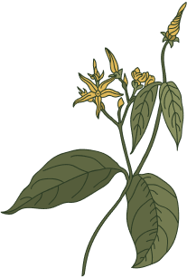

Mg2+ magnez: niezbędnik użytkownika
Można je spotkać prawie wszędzie - w bujnym wilgotnym podszyciu lasu, na łąkach, ale i na miejskich skwerkach i trawnikach. Wspinają się na źdźbła traw i na krzaki.


To grupa ziół 'adaptująca' do trudnych lub zmiennych warunków środowiska. Są uznane za jedne z najpotrzebniejszych współczesnym ludziom ziół. Tutaj znajdziesz o nich wszystko.
Przyglądamy się tradycyjnemu oraz klinicznemu zastosowaniu olejków eterycznych. Zajrzyj do pachnącej apteki Matki Ziemi i podążaj za zmysłem węchu.



To grupa ziół 'adaptująca' do trudnych lub zmiennych warunków środowiska. Są uznane za jedne z najpotrzebniejszych współczesnym ludziom ziół. Tutaj znajdziesz o nich wszystko.